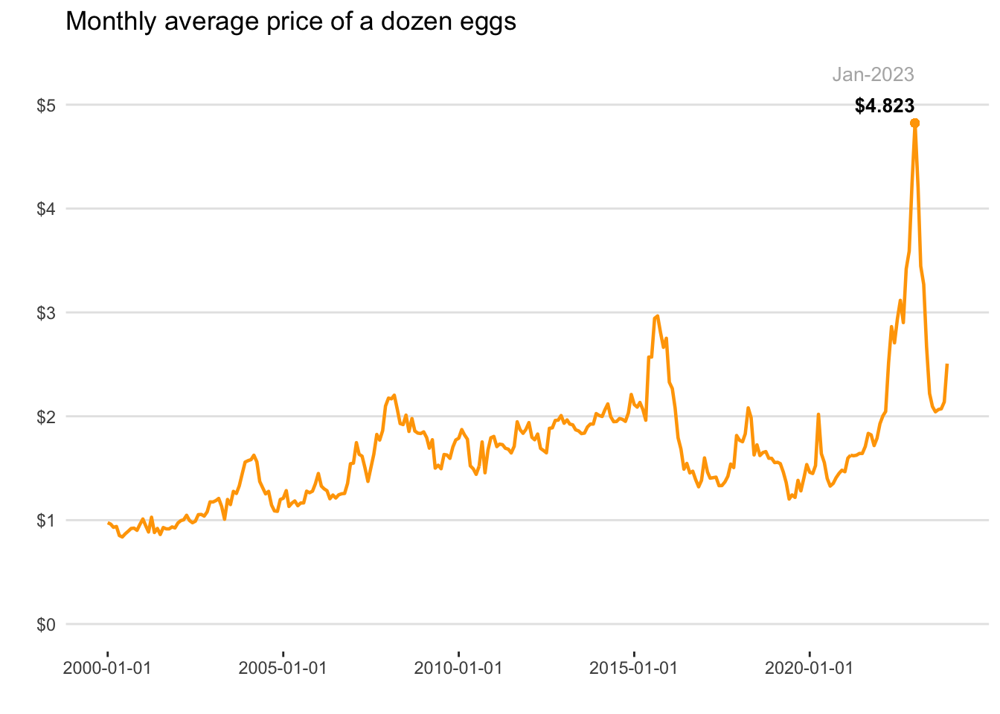

library(tidyverse) # ecosystem of data science packages
library(lubridate) # for working with datesPrice of Eggs
1 Source: NYT
The data visualization of this report is based on the following article (by Ashley Wu) of The New York Times (Feb 3, 2023):
Why Eggs Cost So Much
https://www.nytimes.com/2023/02/03/briefing/why-eggs-cost-so-much.html
2 Data
The data behind the NYT article comes from one of the databases of the US Bureau of Labor Statistics (BLS), namely, the Consumer Price Index Average Price Data.
Specifically, the time series data is in the following link: https://data.bls.gov/timeseries/APU0000708111
- Series Id: APU0000708111
- Series Title: Eggs, grade A, large, per doz. in U.S. city average, average price, not seasonally adjusted
- Area: U.S. city average
- Item: Eggs, grade A, large, per doz.
2.1 Data File
The data is in the text file "price-of-eggs-timeseries.txt" available in the following link:
Assuming that you have this file in your working directory, you can import it as follows:
tbl = read_csv(
file = "price-of-eggs-timeseries.txt",
col_types = cols(
Year = col_double(),
Jan = col_double(),
Feb = col_double(),
Mar = col_double(),
Apr = col_double(),
May = col_double(),
Jun = col_double(),
Jul = col_double(),
Aug = col_double(),
Sep = col_double(),
Oct = col_double(),
Nov = col_double(),
Dec = col_double())
)
head(tbl)# A tibble: 6 × 13
Year Jan Feb Mar Apr May Jun Jul Aug Sep Oct Nov Dec
<dbl> <dbl> <dbl> <dbl> <dbl> <dbl> <dbl> <dbl> <dbl> <dbl> <dbl> <dbl> <dbl>
1 2000 0.975 0.962 0.931 0.939 0.852 0.838 0.868 0.893 0.92 0.923 0.902 0.959
2 2001 1.01 0.943 0.886 1.03 0.881 0.92 0.862 0.929 0.916 0.916 0.935 0.925
3 2002 0.973 0.996 1.00 1.05 0.997 0.975 0.99 1.05 1.06 1.04 1.08 1.18
4 2003 1.18 1.19 1.21 1.13 1.01 1.20 1.15 1.28 1.26 1.33 1.45 1.56
5 2004 1.57 1.58 1.62 1.56 1.37 1.31 1.25 1.28 1.14 1.09 1.08 1.20
6 2005 1.21 1.28 1.13 1.16 1.18 1.14 1.16 1.17 1.28 1.26 1.28 1.35 2.2 Data Preparation
For ggplot convenience, it’s better if we pivot the table to long or tall format so that we only work with 3 variables or columns: Year, Month, and Price:
# Pivot to longer format
dat = pivot_longer(
data = tbl,
cols = Jan:Dec, # columns to be pivoted
names_to = "Month", # name of column with categorical values
values_to = "Price") # name of column with numeric values
head(dat)# A tibble: 6 × 3
Year Month Price
<dbl> <chr> <dbl>
1 2000 Jan 0.975
2 2000 Feb 0.962
3 2000 Mar 0.931
4 2000 Apr 0.939
5 2000 May 0.852
6 2000 Jun 0.838Since we are working with time series data, we also need to add a Date column with dates:
# add date column
dat = dat |>
mutate(Date = as.Date(paste0(Year, "-", Month, "-01"), "%Y-%b-%d"))
head(dat)# A tibble: 6 × 4
Year Month Price Date
<dbl> <chr> <dbl> <date>
1 2000 Jan 0.975 2000-01-01
2 2000 Feb 0.962 2000-02-01
3 2000 Mar 0.931 2000-03-01
4 2000 Apr 0.939 2000-04-01
5 2000 May 0.852 2000-05-01
6 2000 Jun 0.838 2000-06-013 Graph: Timeline
Keep in mind that the timeline of the NYT article goes from Jan-2000 to Dec-2022. In our case, we have a few more data points (12 months of 2023).
# replicated graphic
ggplot(data = dat, aes(x = Date, y = Price)) +
geom_hline(yintercept = 0:5, color = "gray90") +
geom_line(color = "orange", linewidth = 0.8) +
geom_point(x = as.Date("2023-01-01"), y = 4.823, color = "orange") +
scale_x_date(breaks = as.Date(paste0(seq(2000, 2024, by = 5), "-01-01"), "%Y-%m-%d")) +
scale_y_continuous(breaks = 0:5, labels = paste0("$", 0:5)) +
annotate(geom = "text", x = as.Date("2022-12-31"), y = 5.3,
label = "Jan-2023", hjust = 1, color = "gray70", size = 3.5) +
annotate(geom = "text", x = as.Date("2023-01-01"), y = 5,
label = "$4.823", hjust = 1, fontface = 2, size = 3.5) +
theme(axis.line = element_blank(),
panel.background = element_blank(),
axis.ticks.y = element_blank()) +
labs(title = "Monthly average price of a dozen eggs",
x = "",
y = "")